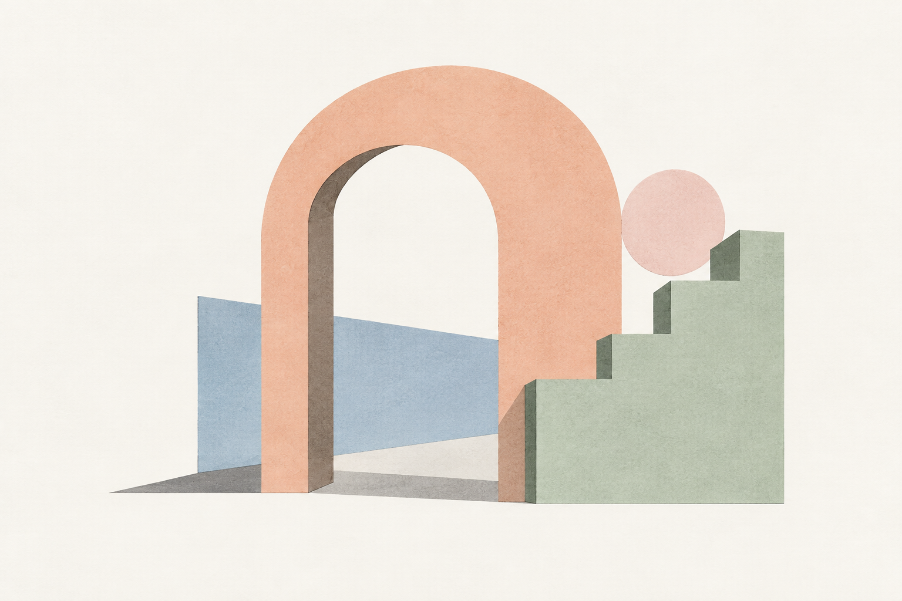
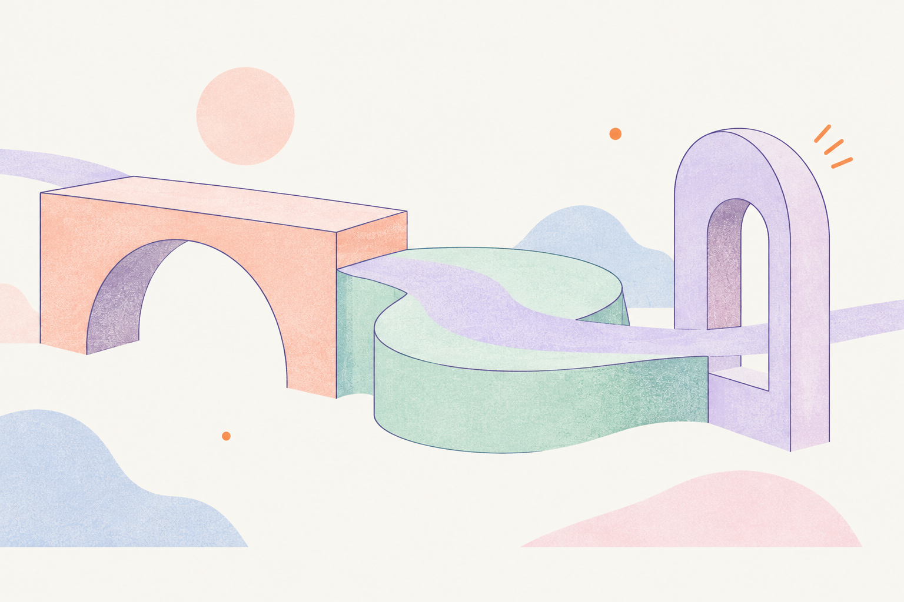

01
改善の優先順位がわかる。
変える仕事が、見える。
仕事を一番よく知る社員の声をもとに、
負担の大きい業務とAIの使いどころを整理します。
人手不足・属人化に向き合う、経営者・役員の方へ。
転記や確認の手間を減らし、
社員が、判断や改善に力を使える会社へ。
自社に合うAIシステムを、開発から定着まで。

SHINAI Make room for what’s next.
02 ABOUT US 15秒でわかるShinAI
改善の優先順位がわかる。
仕事を一番よく知る社員の声をもとに、
負担の大きい業務とAIの使いどころを整理します。
業務に合わせて開発する。
提案書で終わらず、必要なシステムを開発。
既存の仕事の流れに合わせて組み込みます。
導入後も、相談できる。
社員の使い勝手を確かめ、改善を重ねます。
日々の業務で使われる状態まで伴走します。
03 THE REAL CHALLENGE
AIを選ぶ前に、負担が生まれる場所を整理する。
そこから、変えるべき仕事が見えてきます。
必要なのは、ツール選びだけでなく、
仕事の流れから考えること。
04 OUR APPROACH
業務の流れを知らないままでは、解くべき課題は見えません。
現場の仕事を理解するところから始め、開発も、その後の定着も、同じチームが担います。
05 OUR PHILOSOPHY
何度も入力する。あちこち探す。
その時間を、お客様への提案や次の改善へ。
AIを入れた先の「仕事の変化」を大切にします。
転記・確認・情報探し
提案・判断・改善
06 WORK, REIMAGINED
今の仕事がどう変わるか、業務ごとにご覧ください。
支援で目指す変化の例です。
電話・FAX・メール・Excel。
情報を集めて、何度も入力。
情報を整理し、
確認・入力・判断をAIで支援。
図面・過去案件・経験則を、
担当者が一つずつ確認。
過去情報とAIを組み合わせ、
見積判断を支援。
データは蓄積されているが、
計画や判断に活かせていない。
情報の持ち方から整え、
AIが活用できるデータ構造へ。
「あの人に聞かないと分からない」。
探す時間も、答える時間もかかる。
社内の情報を整理し、
必要な知識へAIからアクセス。
会議が終わってから、
議事録づくり・整理・共有。
会議から情報整理までAIが補助。
次の行動につながる共有へ。
研修は受けたけれど、
実際の業務で使う機会がない。
自社の仕事を題材に、
業務に活きるAI活用を習得。
07 HOW WE WORK
いきなり開発を決める必要はありません。
今の仕事の話から、一歩ずつ進めます。
まず経営課題や
業務について伺います。
AIを使う場所と、
使わない場所を整理。
必要に応じて、
小さな検証から。
自社の業務に合う
仕組みを開発します。
社員が使える状態まで
伴走します。
08 OUR DISTANCE
経営者の「変えたい」と、
社員の「こうすれば使える」をつなぐ。
その対話を、開発と改善につなげます。

目的や優先順位から話せるので、何を変えるかを決めやすい。
社員のやり方や困りごとを、使いやすい仕組みに反映する。
相談した内容が開発につながり、導入後の改善も一緒に進められる。
09 OUR EXPERTISE
相談で終わらず、実際に動く仕組みへ。
業務に合う技術を選び、組み合わせます。
業務に合わせて選ぶ、技術の引き出し。
10 THE FUTURE WE BUILD
人と情報と仕事が、自然につながる。
AIが企業活動の中で、当たり前に働く。
一つのツールの導入から、
企業そのものがAIを活用できる構造へ。
その変化を、一緒につくっていきます。
AIが、日々の仕事の中で働く。
11 COMPANY
群馬を拠点に、中小・中堅企業の
AI活用を支援しています。
GUNMA — TAKASAKI
近くのパートナーとして、その先の未来へ。
12 LET’S TALK
AIを導入するか、決まっていなくても大丈夫です。
「人を増やさずに、この業務を回せるだろうか」。
そんな経営の悩みからで構いません。
AIが役立つ業務と、まず整えるべきことを一緒に考えます。
送信しました。
ご記入のメールアドレスへ、担当者よりご連絡します。